Pengertian Sabun Cair
Sabun cair adalah produk pembersih yang berbentuk cair dan digunakan untuk membersihkan kotoran serta minyak pada kulit.
Sabun cair dibuat melalui proses kimia yang disebut saponifikasi, yaitu reaksi antara minyak dan basa.
Perubahan Zat pada Sabun Cair
Dalam proses pembuatan sabun cair, terjadi dua jenis perubahan zat:
- Perubahan fisika: Terjadi saat bahan dicampur dan larut tanpa membentuk zat baru.
- Perubahan kimia: Terjadi saat reaksi antara minyak dan alkali (KOH) yang menghasilkan sabun sebagai zat baru.
Cara Pembuatan Sabun Cair
- Masukan texapon sebanyak 120 gram.
- Masukan garam (NaCl) sebanyak 30 gram.
- Masukan sulfat sebanyak 30 gram.
- Masukan EDTA sebanyak 2 gram.
- Aduk hingga merata sampai putih susu.
- Masukan air 900 ml sedikit demi sedikit.
- Aduk hingga mengental.
- Tambahkan air sedikit demi sedikit (sisakan 100 ml).
- Masukan foam booster 20 ml.
- Masukan gliserin 10 ml sambil diaduk.
- Masukan BKC 3 ml.
- Masukan essence 10 ml.
- Tambahkan pewarna 6 tetes.
- Masukan sisa air 100 ml.
- Aduk hingga rata.
- Diamkan 1 hari sampai jernih.
- Kemas ke botol.
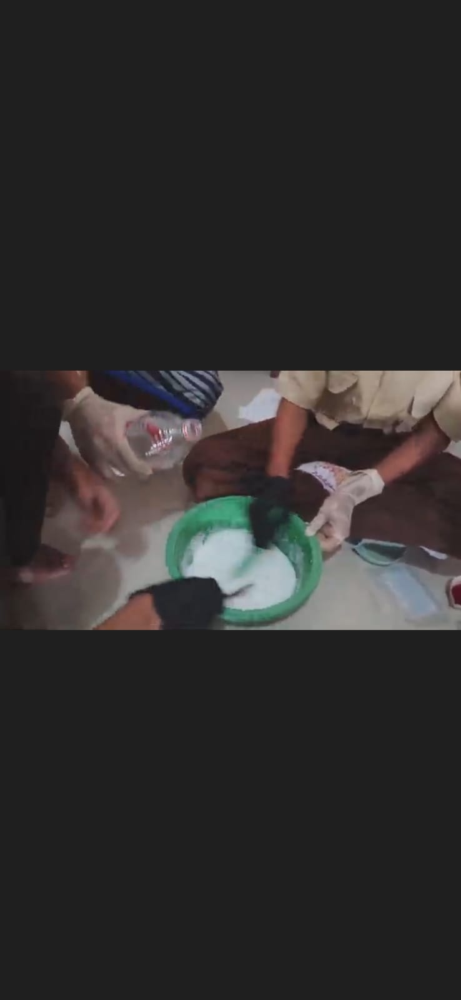
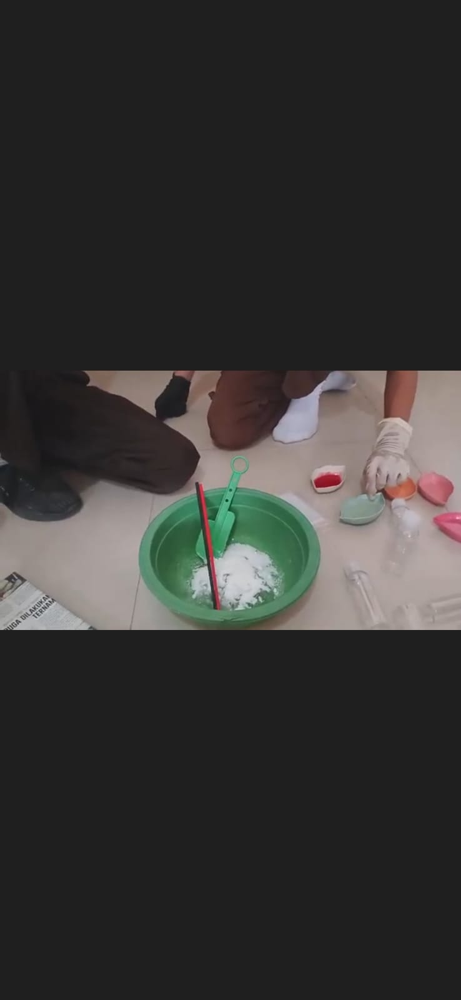
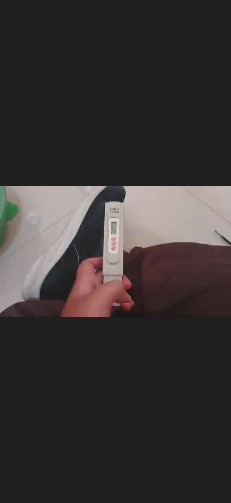
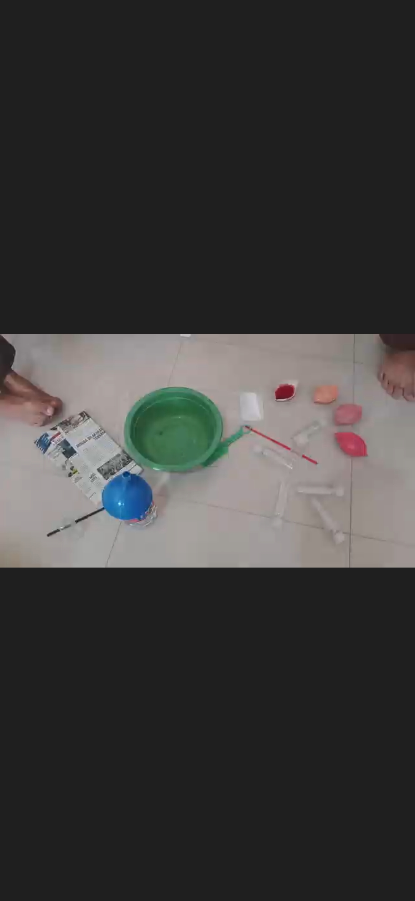
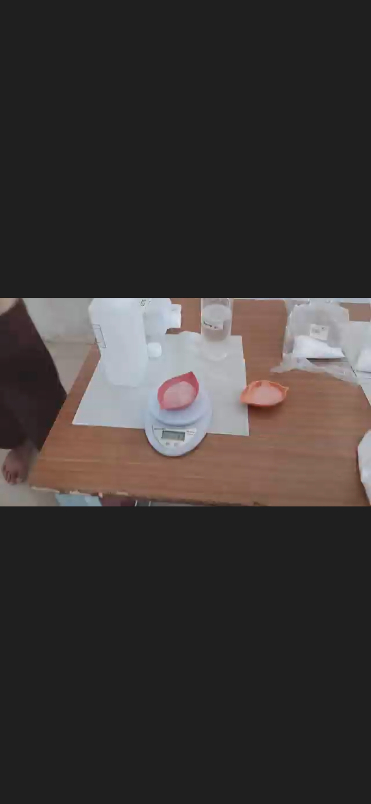
Bahan-bahan Sabun Cair
- Air 1 Liter
- Texapon 120 Gram
- Sulfat 30 Gram
- NaCl (Garam) 30 Gram
- Foam Booster 20 ml
- BKC 3 ml
- Gliserin 10 ml
- Pewarna Makanan 6 tetes
- Essence 10 ml
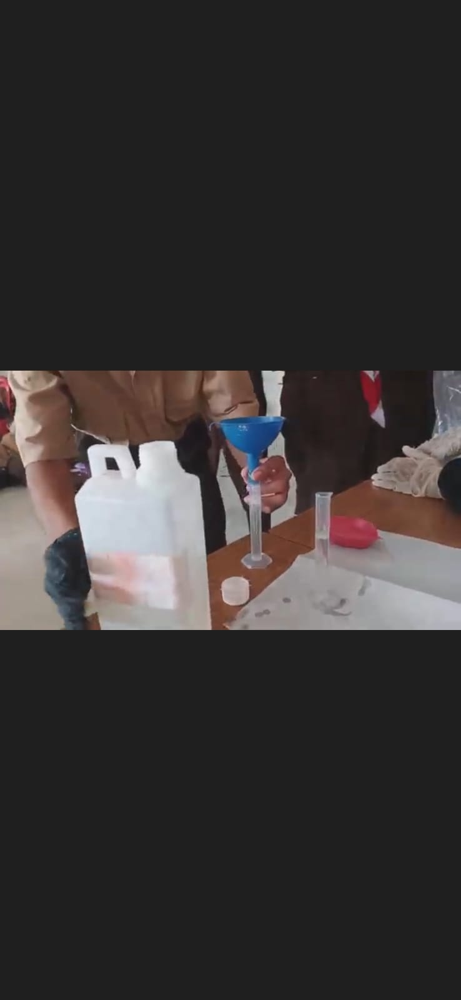
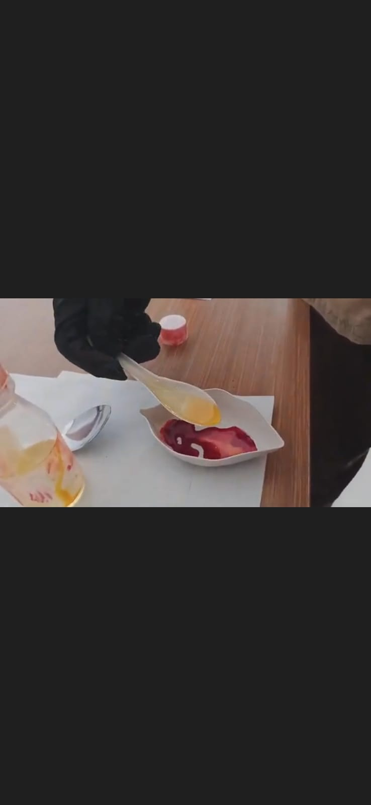
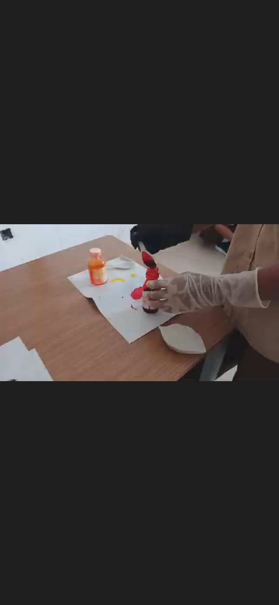
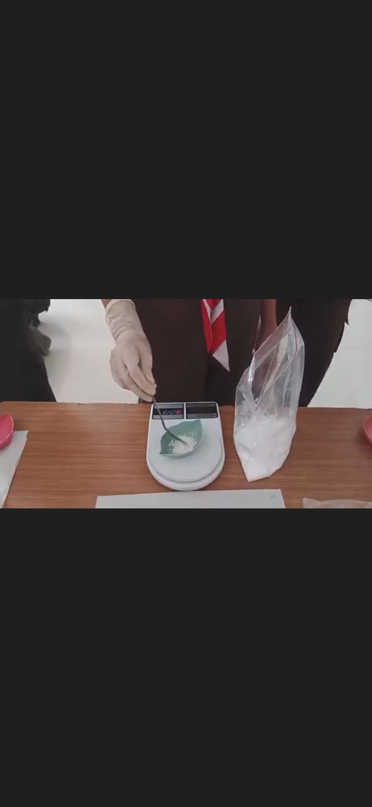
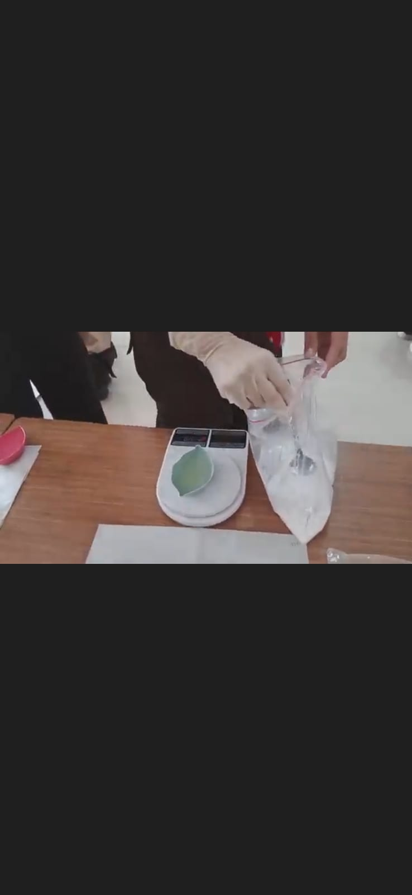
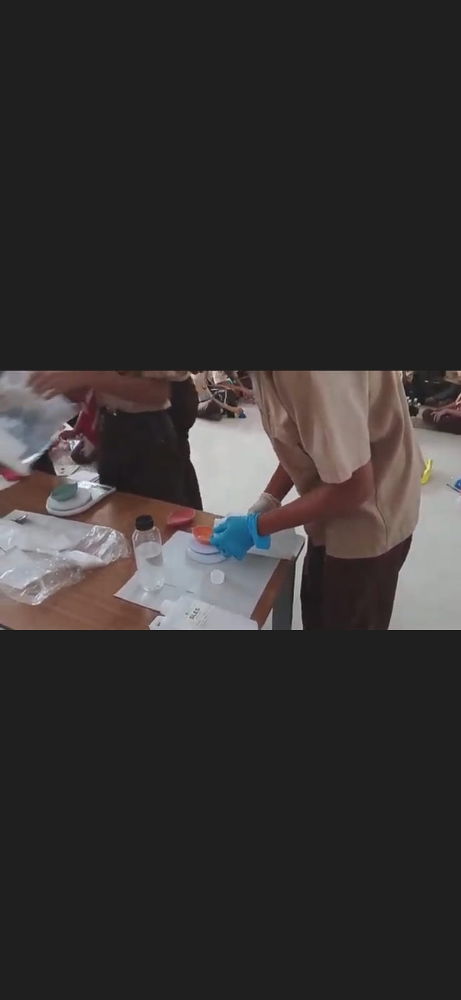
Nama Kelompok
- M. Anwar Syadad (25101901)
- Rangga Mulia Galih (25101951)
- M. Lucky Purnama (25101884)
- Yopti (25102012)
- Nazam Satura Fikrah (25101925)
- Kafaka Fadlan (25101849)
alasan memilih nama ruby berry wash
Pemilihan nama Ruby Berry Wash kemungkinan besar didasarkan pada kombinasi kesan mewah, kesegaran alami, dan tujuan fungsional dari produk tersebut. Berikut adalah analisis alasan pemilihannya berdasarkan makna kata-katanya:
Ruby (Permata Merah): Ruby melambangkan permata yang istimewa, mewah, dan berharga. Penggunaan kata ini memberikan kesan kualitas produk yang tinggi, premium, serta kekuatan dan gairah.
Berry (Buah Beri): Berry memberikan kesan alami, segar, berair, dan sering kali dikaitkan dengan aroma atau bahan yang manis/menyegarkan. Ini memberikan citra produk yang sehat dan berenergi.
Wash (Pembersih): Menunjukkan fungsi utama produk sebagai pencuci, pembersih, atau sabun.
C&F Store
C&F Store
+4
Kombinasi "Ruby Berry Wash"
Nama ini menciptakan citra sebuah produk pembersih (Wash) yang tidak hanya efektif, tetapi juga menawarkan pengalaman mewah dan eksklusif (Ruby) dengan bahan yang segar dan alami (Berry).
Brosur sabun cuci tangan kami
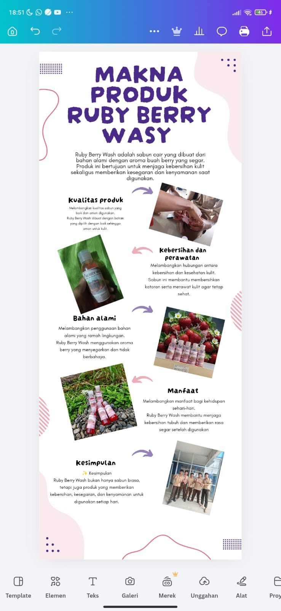